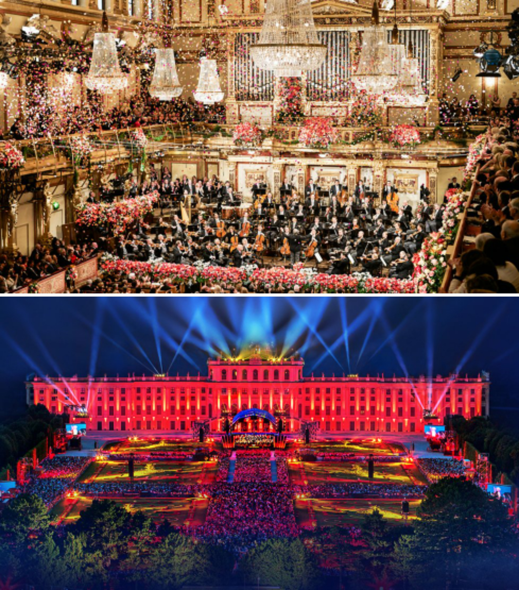

Ticket Information
On this page you will find detailed information about the purchase of tickets to our subscription concerts as well as to all other Vienna Philharmonic concerts.
Information on the Vienna Philharmonic Subscription Concerts
Since 1860, the Vienna Philharmonic Subscription Concerts have formed the basis of the orchestra's musical endeavors and have become an indispensable component of Viennese musical life. As a result, the demand for subscriptions is great and the waiting list is long. We explain to you here the procedure for obtaining a subscription to the Saturday, Sunday or Soirée series.
Ticket Information for Additional Vienna Philharmonic Concerts in Vienna and on Tour
Although the waiting line for subscription concerts appears very long, there are numerous other possibilities to experience the orchestra first-hand in Vienna, in Austria, within Europe and around the world. The Vienna Philharmonic performs many concerts in Vienna for the Society of Friends of Music, for the Vienna Festival Weeks and on other occasions. Every year the orchestra can be heard at the Salzburg Mozart Week as well as at the Salzburg Festival. In addition, the orchestra makes concert appearances in the most outstanding concert halls in Europe and abroad, including annual concert series in Japan and New York.
Information regarding all Vienna Philharmonic concerts, both domestic and abroad, can be found on this website. However, because the majority of these concerts are presented by other organizations, these tickets are not sold over our website. Instead, you will find on the detail page for each concert a link to the information page of the particular concert presenter, assuming that this information is available to us.
The Vienna State Opera should certainly also be mentioned in this context. Every year the musicians of the Vienna Philharmonic perform here on nearly 300 evenings in their capacity as the Vienna State Opera Orchestra. Ticket information for all performances at the Vienna State Opera can be found here.
Tickets for the New Year's Concert
Due to extremely high demand, tickets for the three traditional end of year concerts of the Vienna Philharmonic are drawn by lot over the Vienna Philharmonic website at the beginning of each year. Detailed information about participation in the drawing can be found here. We have also published Frequently Asked Questions for more information. The only way to obtain tickets for these concerts is by taking part in the online drawing!
The Summer Night Concert in Schönbrunn
Every year the Vienna Philharmonic presents an open-air concert in the unique ambiance of the Schönbrunn Palace Gardens in Vienna. All Viennese and visitors to the city are invited to this event, which is open to the public free of charge. There are no tickets to be procured or reservations to be obtained for this concert. All pertinent information regarding this event can be found on the Summer Night Concert Schönbrunn pages.